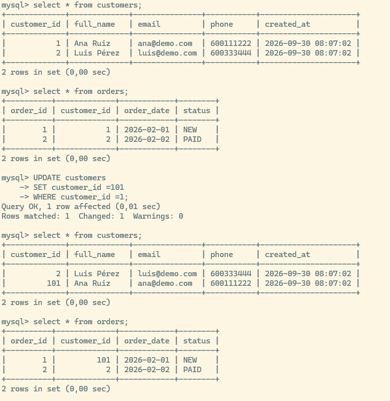
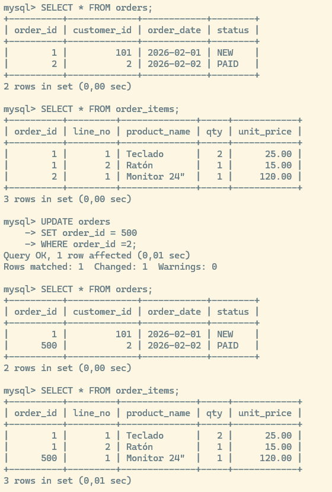
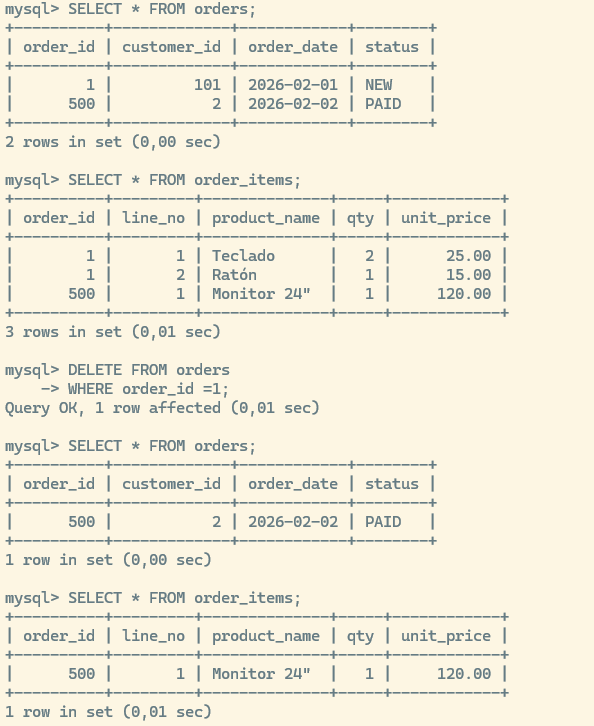
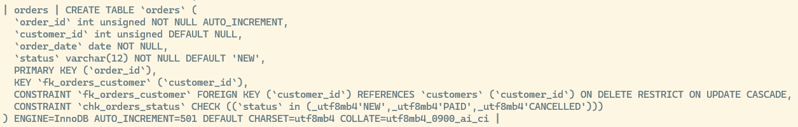
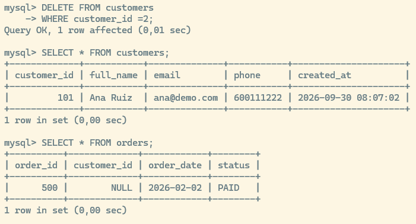

Laboratorio Relaciones PK y FK en MySQL
Gestión de un modelo Mini-ventas (Clientes → Pedidos → Líneas de Detalle)
1 Objetivo del Laboratorio
En esta práctica vamos a comprobar de forma directa sobre MySQL el comportamiento de las claves y restricciones en un modelo relacional:
- Clave Primaria (
PRIMARY KEY): Garantiza la unicidad e identifica de forma unívoca cada fila. - Clave Foránea (
FOREIGN KEY): Mantiene la integridad referencial y evita registros “huérfanos”. - Restricciones (
CONSTRAINT): Control de reglas de integridad medianteNOT NULL,UNIQUEyCHECK. - Reglas de integridad referencial (
ON UPDATE/ON DELETE): Funcionamiento deCASCADE,RESTRICTySET NULL. - Modificación de esquemas (
ALTER TABLE): Modificar columnas, cambiar restricciones y redefinir claves foráneas en caliente. - Diferencias prácticas entre
UPDATEyDELETEen tablas relacionadas.
2 Preparación del Entorno
Comenzamos asegurando un entorno limpio. Eliminamos la base de datos si ya existía y la volvemos a crear:
DROP DATABASE IF EXISTS lab_relaciones;
CREATE DATABASE lab_relaciones;
USE lab_relaciones;3 Tabla Padre: customers (PK + UNIQUE + DEFAULT)
La tabla customers actuará como la entidad principal o “padre” dentro del esquema.
CREATE TABLE customers (
customer_id INT UNSIGNED AUTO_INCREMENT,
full_name VARCHAR(80) NOT NULL,
email VARCHAR(120) NOT NULL,
phone VARCHAR(20) NULL,
created_at DATETIME NOT NULL DEFAULT CURRENT_TIMESTAMP,
-- Definición explícita de restricciones a nivel de tabla
CONSTRAINT pk_customers PRIMARY KEY (customer_id),
CONSTRAINT uq_customers_email UNIQUE (email)
);Elementos clave a observar: *
customer_ides la Clave Primaria (PK) autoincremental. *UNIQUE, lo que impedirá registrar correos duplicados. *created_atasigna automáticamente la fecha y hora del sistema medianteDEFAULT CURRENT_TIMESTAMP.
4 Tabla Intermedia: orders (FK con RESTRICT y CASCADE)
A continuación creamos la tabla orders. Aplicaremos la regla ON DELETE RESTRICT para comprobar cómo el motor bloquea la eliminación de un cliente cuando tiene pedidos asociados.
CREATE TABLE orders (
order_id INT UNSIGNED AUTO_INCREMENT,
customer_id INT UNSIGNED NULL, -- Permitimos NULL para poder probar más adelante la regla SET NULL
order_date DATE NOT NULL,
status VARCHAR(12) NOT NULL DEFAULT 'NEW',
-- Definición de claves y restricciones
CONSTRAINT pk_orders PRIMARY KEY (order_id),
CONSTRAINT chk_orders_status CHECK (status IN ('NEW', 'PAID', 'CANCELLED')),
CONSTRAINT fk_orders_customer
FOREIGN KEY (customer_id)
REFERENCES customers (customer_id)
ON UPDATE CASCADE
ON DELETE RESTRICT
);Elementos clave a observar:
Clave Foránea (FK):
orders.customer_idreferencia acustomers.customer_id.
ON UPDATE CASCADE: Si el código de un cliente cambia, sus pedidos se actualizarán automáticamente.
ON DELETE RESTRICT: Impide borrar un cliente si este conserva pedidos registrados.
5 Tabla Hija: order_items (PK Compuesta + FK con CASCADE)
Las líneas de detalle dependen directamente de un pedido. Si se elimina un pedido, sus líneas asociadas no deben permanecer en la base de datos.
CREATE TABLE order_items (
order_id INT UNSIGNED NOT NULL,
line_no INT UNSIGNED NOT NULL,
product_name VARCHAR(80) NOT NULL,
qty INT NOT NULL,
unit_price DECIMAL(10,2) NOT NULL,
-- Clave primaria compuesta (un pedido no puede tener dos líneas con el mismo número)
CONSTRAINT pk_order_items PRIMARY KEY (order_id, line_no),
CONSTRAINT fk_items_order
FOREIGN KEY (order_id)
REFERENCES orders(order_id)
ON UPDATE CASCADE
ON DELETE CASCADE
);Elementos clave a observar:
Clave Primaria Compuesta (
order_id,line_no): Identifica de forma única cada elemento dentro de un mismo pedido.
ON DELETE CASCADE: Al borrar un pedido, MySQL eliminará automáticamente todas sus líneas de detalle.
6 Inserción de Datos de Prueba
Poblamos las tablas con datos iniciales para realizar las comprobaciones prácticas:
-- 1. Inserción de clientes
INSERT INTO customers (full_name, email, phone) VALUES
('Ana Ruiz', 'ana@demo.com', '600111222'),
('Luis Pérez', 'luis@demo.com', '600333444');
-- 2. Inserción de pedidos vinculados a los clientes 1 y 2
INSERT INTO orders (customer_id, order_date, status) VALUES
(1, '2026-02-01', 'NEW'),
(2, '2026-02-02', 'PAID');
-- 3. Inserción de líneas de detalle para los pedidos
INSERT INTO order_items (order_id, line_no, product_name, qty, unit_price) VALUES
(1, 1, 'Teclado', 2, 25.00),
(1, 2, 'Ratón', 1, 15.00),
(2, 1, 'Monitor 24"', 1, 120.00);7 Pruebas de Integridad: Errores Controlados
Ejecutamos intencionadamente consultas incorrectas para comprobar cómo actúan las reglas de integridad.
7.1 Restricción UNIQUE: Intentar duplicar un correo
-- Intento de insertar un cliente con un email ya existente
INSERT INTO customers
(full_name, email)
VALUES
('Otra Ana', 'ana@demo.com');- Resultado esperado: Error de MySQL notificando la violación de la restricción
uq_customers_email(Duplicate entry 'ana@demo.com' for key 'uq_customers_email').
7.2 Restricción FOREIGN KEY: Referenciar un cliente inexistente
-- Intento de crear un pedido asociado al customer_id 999 (inexistente)
INSERT INTO orders (customer_id, order_date, status)
VALUES (999, '2026-02-03', 'NEW');Resultado esperado: Error de integridad referencial provocado por
fk_orders_customerERROR 1452 (23000): Cannot add or update a child row: a foreign key constraint fails (lab_relaciones.orders, CONSTRAINT fk_orders_customer FOREIGN KEY (customer_id) REFERENCES customers (customer_id) ON DELETE RESTRICT ON UPDATE CASCADE)
7.3 Restricción CHECK: Usar un estado no permitido
-- Intento de asignar el estado 'SHIPPED' no incluido en la cláusula CHECK
INSERT INTO orders
(customer_id, order_date, status)
VALUES (1, '2026-02-03', 'SHIPPED');- Resultado esperado: Error por violación del
CHECKchk_orders_status(ERROR 3819 (HY000): Check constraint 'chk_orders_status' is violated.)
8 Comprobación de ON UPDATE CASCADE
8.1 Propagación de cambios en la Clave Primaria del Cliente
Vamos a modificar el ID de un cliente para observar cómo la actualización se propaga automáticamente a sus pedidos.
-- Consultamos el estado inicial
SELECT * FROM customers;
SELECT * FROM orders;
-- Cambiamos la clave primaria del cliente 1
UPDATE customers
SET customer_id = 101
WHERE customer_id = 1;
-- Verificamos el efecto en ambas tablas
SELECT * FROM customers;
SELECT * FROM orders;- Resultado: El
customer_iddel cliente ‘Ana Ruiz’ pasa a ser101, y la columnacustomer_idde sus pedidos asociados en la tablaordersse actualiza automáticamente a101.

8.2 Propagación de cambios en la Clave Primaria del Pedido
-- Consultamos las tablas orders y order_items
SELECT * FROM orders;
SELECT * FROM order_items;
-- Modificamos el order_id del pedido 2 a 500
UPDATE orders
SET order_id = 500
WHERE order_id = 2;
-- Verificamos el efecto en las líneas de detalle
SELECT * FROM orders;
SELECT * FROM order_items;- Resultado: Las líneas de detalle en
order_itemsvinculadas originalmente al pedido2pasan a estar vinculadas al pedido500.

9 Comprobación de ON DELETE: CASCADE vs RESTRICT
9.1 ON DELETE CASCADE: Borrado automático de registros hijos
SELECT * FROM orders;
SELECT * FROM order_items;
-- Eliminamos el pedido 1
DELETE FROM orders
WHERE order_id = 1;
-- Comprobamos si las líneas del pedido han desaparecido
SELECT * FROM orders;
SELECT * FROM order_items;Resultado: Al eliminar el pedido
1, sus líneas correspondientes enorder_itemsson eliminadas automáticamente por el motor.
9.2 ON DELETE RESTRICT: Bloqueo de eliminación de un registro padre
-- Intentamos eliminar al cliente Luis (customer_id = 2), que posee el pedido 500
DELETE FROM customers
WHERE customer_id = 2;- Resultado esperado: Inserción denegada por la regla
RESTRICT. MySQL impide la eliminación porque el cliente conserva registros hijos vinculados.ERROR 1451 (23000): Cannot delete or update a parent row: a foreign key constraint fails (lab_relaciones.orders, CONSTRAINT fk_orders_customer FOREIGN KEY (customer_id) REFERENCES customers (customer_id) ON DELETE RESTRICT ON UPDATE CASCADE)
10 Modificación del Esquema con ALTER TABLE
Modificaremos la regla referencial en caliente sin necesidad de eliminar ni recrear la base de datos.
10.1 Inspeccionar la estructura actual
SHOW CREATE TABLE orders;
10.2 Sustituir la Clave Foránea (DROP + ADD)
-- 1. Eliminamos la restricción FK anterior basada en RESTRICT
ALTER TABLE orders
DROP FOREIGN KEY fk_orders_customer;
-- 2. Creamos la nueva restricción cambiando la regla a ON DELETE SET NULL
ALTER TABLE orders
ADD CONSTRAINT fk_orders_customer
FOREIGN KEY (customer_id)
REFERENCES customers(customer_id)
ON UPDATE CASCADE
ON DELETE SET NULL;10.3 Reintentar la eliminación del cliente
-- Reintentamos borrar al cliente Luis (customer_id = 2)
DELETE FROM customers
WHERE customer_id = 2;
-- Verificamos el estado de sus pedidos
SELECT * FROM orders;Resultado: El cliente es eliminado. El pedido
500permanece en la base de datos, pero la columnacustomer_idpasa automáticamente a valorNULL.
11 Renombrar Columnas con ALTER TABLE
Modificaremos el nombre de la columna phone en la tabla customers.
-- Sintaxis estándar para MySQL 8.0+
ALTER TABLE customers
RENAME COLUMN phone TO phone_number;
-- Sintaxis alternativa compatible con versiones anteriores (CHANGE):
-- ALTER TABLE customers CHANGE phone phone_number VARCHAR(20) NULL;
-- Verificamos el cambio de estructura
DESCRIBE customers;
12 Incorporar Restricciones a Posteriori
Añadiremos una restricción CHECK sobre la tabla order_items para garantizar que las cantidades registradas sean siempre estrictamente mayores que cero (qty > 0).
-- Incorporamos la nueva restricción CHECK
ALTER TABLE order_items
ADD CONSTRAINT chk_items_qty CHECK (qty > 0);
-- Intentamos realizar una inserción que viole la regla
INSERT INTO order_items (order_id, line_no, product_name, qty, unit_price)
VALUES (500, 2, 'Cable HDMI', 0, 8.00);- Resultado esperado: La inserción falla por violación de la nueva restricción
chk_items_qty.ERROR 3819 (HY000): Check constraint 'chk_items_qty' is violated.
13 Mini-Reto Práctico para Alumnos
Resuelve las siguientes cuestiones aplicando los comandos estudiados:
- Nuevo Pedido y Detalle: Crea un nuevo pedido para la clienta Ana Ruiz (cuyo
customer_idactual es101) e inserta \(2\) líneas de detalle.Pista: Debes ejecutar un
INSERT INTO ordersseguido de dosINSERT INTO order_items.El order_id autoasignado al nuevo pedido es 501, es decir, cuando cambiamos manualmente el order_id de 2 a 500 movimos el contador del auto_increment a ese nuevo máximo y los números intermedios quedarán vacios.
- Actualización de Estado: Modifica el estado del pedido recién creado para asignarle el valor
'PAID'.- Pista: Utiliza
UPDATE orders SET status = 'PAID' WHERE order_id = ...;.
- Pista: Utiliza
- Verificación de Borrado en Cascada: Elimina el pedido que acabas de crear y comprueba que sus líneas han sido eliminadas automáticamente.
- Pista: Utiliza
DELETE FROM orders ...y realiza posteriormente una consultaSELECTsobreorder_items.
- Pista: Utiliza
- Validación de Restricciones: Intenta actualizar el estado de un pedido al valor
'DELIVERED'y analiza el mensaje de error devuelto por la base de datos.- Pista: Revisa los valores permitidos en la restricción
chk_orders_status.
- Pista: Revisa los valores permitidos en la restricción
- Reconfiguración de Clave Foránea: Modifica la restricción
fk_orders_customerpara que vuelva a aplicar la reglaRESTRICTmediante sentenciasALTER TABLE. Explica qué ocurriría si intentaras eliminar a Ana Ruiz tras este cambio.
14 Resumen de Conceptos Clave
- Primary Key (PK): Identificador único de cada fila. Impide duplicados y valores nulos.
- Foreign Key (FK): Establece el vínculo hacia una clave primaria en otra tabla, asegurando que no existan registros huérfanos.
CONSTRAINT: Reglas de validación aplicadas a nivel de tabla (UNIQUE,NOT NULL,CHECK).ON UPDATE CASCADE: Propaga los cambios de la clave primaria del registro padre hacia sus registros hijos.ON DELETE RESTRICT: Impide eliminar un registro padre mientras conserve registros hijos asociados.ON DELETE CASCADE: Elimina automáticamente los registros hijos al eliminar el registro padre.ON DELETE SET NULL: Mantiene los registros hijos asignando el valorNULLa su clave foránea al eliminar el registro padre.ALTER TABLE: Permite reestructurar la tabla (modificar columnas y restricciones) conservando los datos existentes.UPDATEvsDELETE:UPDATEmodifica el contenido de campos en filas existentes;DELETEelimina filas completas de la tabla.